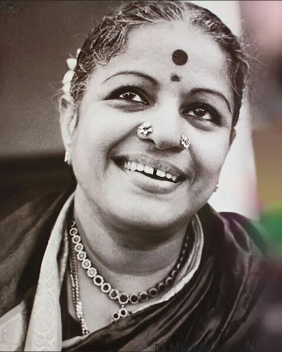
Save image asms-subbulakshmi.jpg
THE SOUNDS OF INDIA
Travel across India through its musical traditions. Choose a state to discover instruments, their sounds, and the stories behind them.
Explore the mapYOUR JOURNEY BEGINS HERE
Select a state on the map or search for a region.
↖ Hover over a region, then click to explore it.
FIND YOUR REGION
No matching state found. Try another name.
Instruments give a region its rhythm, but the voice is where Indian classical music begins. Meet some of the singers, Hindustani and Carnatic, who shaped how India sings.

Save image asThe first musician to receive the Bharat Ratna, her devotional voice carried Carnatic music to the United Nations.
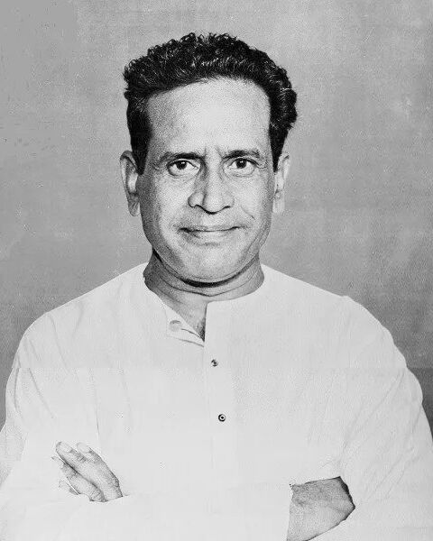
Save image asA thunderous khayal singer and Bharat Ratna, loved equally for his abhangs and bhajans.
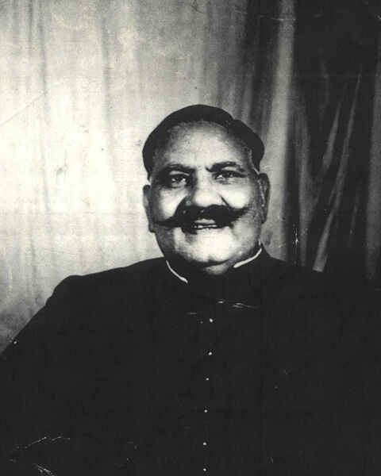
Save image asFamed for his effortless range and the romance of his thumris, including "Prem ke jogi".
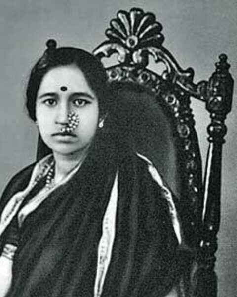
Save image asHer deep, powerful voice broke barriers of caste and gender over a career of seven decades.
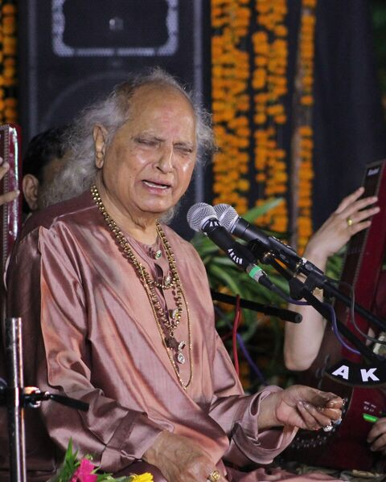
Save image asA master of devotional khayal who created the jasrangi style of male-female duet.
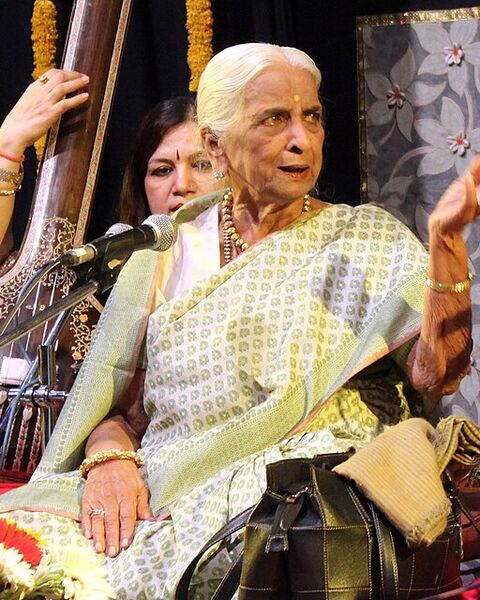
Save image asCelebrated as the "Queen of Thumri", she kept the light-classical forms of Banaras alive.
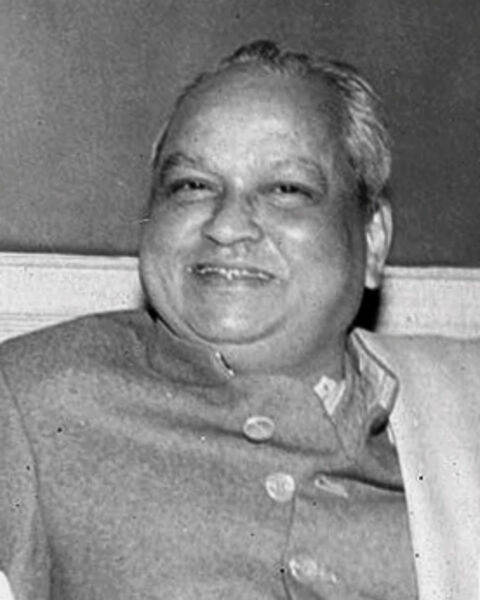
Save image asA fearless innovator who drew on Malwa folk songs and the nirguni bhajans of Kabir.
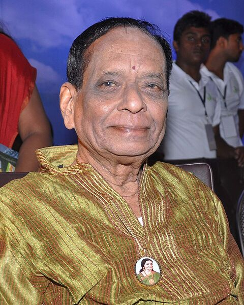
Save image asA child prodigy turned composer who invented new ragas and wrote kritis in every melakarta.
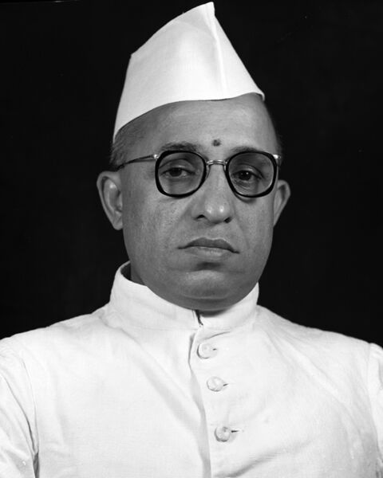
Save image asRevered as the grand patriarch of Carnatic music and a guru to generations of singers.
A Carnatic concert singer whose voice also became the sound of South Indian cinema.
Known for dazzling taans across three octaves and her rendition of "Hamein tumse pyar kitna".
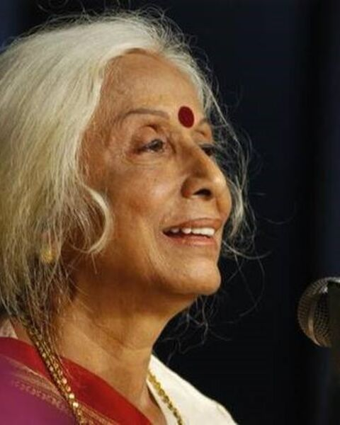
Save image asA singer, scholar and composer whose khayals and bandishes are sung across the country.
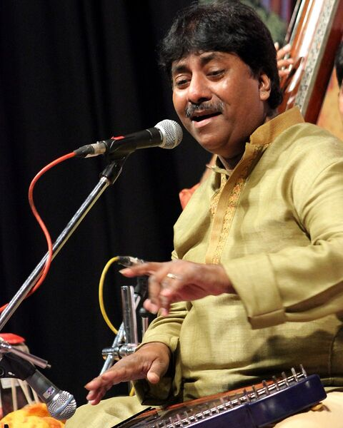
Save image asA rich, unhurried khayal voice who brought classical singing to a new generation.
A versatile vocalist and guru who founded the Shrutinandan school of music in Kolkata.
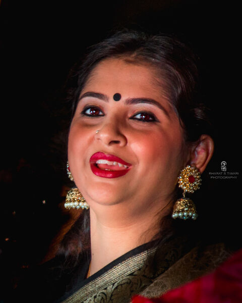
Save image asOne of today's leading voices in khayal and thumri, trained by her father Ajoy Chakrabarty.
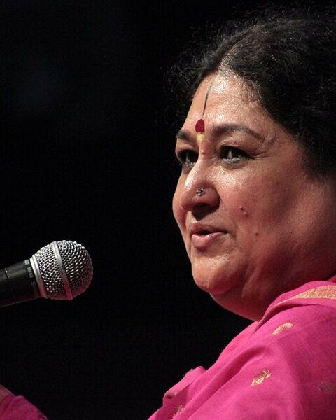
Save image asMoves freely between khayal, thumri and dadra, and contemporary music.
ABOUT THIS PROJECT
Raga Atlas is a student-led digital atlas concept for exploring India's diverse musical heritage. The map and sample content are a starting point; add your team's research, images, audio, and citations to make it your own.